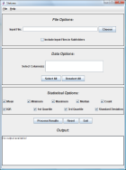

The main Statsres screen contains three distinct areas allowing you to specify File Options (which comma-separated values files to process), Data Options (which columns within those data files to process) and Statistical Options (which statistical measurements to calculate). The values of these statistical measurements are displayed in the Output box at the bottom of the screen after clicking the "Process Results" button.